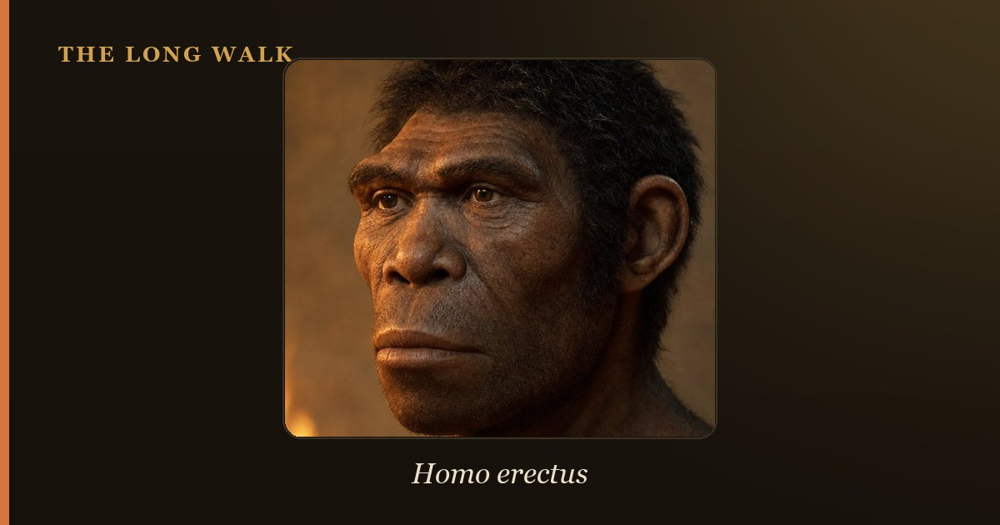

Earliest hints of fire use appear around 1.5 million years ago, but true habitual control—regular hearths and repeated use—is clearest only by 400,000 years ago. Wonderwerk Cave in South Africa holds some of the strongest early evidence. Fire transformed human diet, warmth, safety, and social life forever.

For hundreds of thousands of years, our hominin ancestors lived without controlled fire. Then, gradually, they learned to capture it, keep it alive, and use it on purpose. This shift was not a single invention or a eureka moment. Instead, it unfolded across a vast span of time, with different groups in different places experimenting, failing, and slowly building mastery. Today, archaeologists are still piecing together when and how this happened.
The puzzle starts with a simple problem: how do you tell the difference between a natural fire and a controlled one? Burned bones and charred stone can result from lightning strikes, volcanic activity, or grassfires sweeping across the landscape. A hominin-made hearth, by contrast, leaves telltale signs: ash clusters, heat-cracked rocks, or burned material concentrated in one spot over time. These clues let scientists separate the accidental from the intentional.
| Site / evidence | Approx. age | What it shows |
|---|---|---|
| Koobi Fora & Chesowanja, Kenya | ~1.5 million years ago | Burned sediments and bones; ambiguous—could be natural fire or early use by Homo erectus |
| Wonderwerk Cave, South Africa | ~1 million years ago | Microscopic ash and burned bone deep inside cave; unlikely to be natural fire, strong early evidence |
| Gesher Benot Ya'aqov, Israel | ~790,000 years ago | Repeated clusters of burned flint and wood at same location; shows repeated, purposeful fire use |
| Zhoukoudian, China | ~500–400,000 years ago | Thick ash layers; debated interpretation, but suggests habitual fire use by Homo erectus |
| Qesem Cave, Israel | ~400,000 years ago | Central hearth used repeatedly; clear evidence of intentional, sustained fire management |
| European hearths | ~400–300,000 years ago | Widespread, unambiguous hearths in multiple sites; marks shift to habitual, routine fire use |
The earliest hints: A glimmer in the darkness
The very oldest signs of fire and hominins living together appear around 1.5 million years ago at sites like Koobi Fora in Kenya, where Homo erectus may have encountered burned stone and bone. But "encountered" is the key word. These traces are ambiguous. Without more compelling evidence, it is hard to say whether Homo erectus was deliberately using fire or simply finding it already burning and scavenging around it.
Interpretation becomes easier when we reach Wonderwerk Cave in South Africa, dated to roughly one million years ago. Here, researchers led by Francesco Berna found microscopic ash and burned bone deep inside the cave—so far from the entrance that natural fire sweeping through the landscape simply cannot explain it. The presence of burned material in the cave's interior suggests that hominins brought fire inside intentionally, or at least managed fire within their shelter. This is the strongest early archaeological evidence that fire use was real.
Growing confidence: Repeated use and purposeful placement
As time moves forward, the fingerprint of human control becomes clearer. At Gesher Benot Ya'aqov in Israel, dated to around 790,000 years ago, archaeologists uncovered multiple clusters of burned flint and charred wood scattered across the same area—a pattern that points to fire being used, abandoned, and then used again at the same spot. This repetition is key: it suggests our ancestors were not merely collecting a windfall of natural fire, but were actively creating hearths and returning to them.
During this period, Homo erectus was still the dominant hominin species across Africa, Asia, and the Middle East. Whether this species discovered fire independently in different places, or whether knowledge spread from population to population, remains unknown. What we can say is that by half a million years ago, pockets of habitual fire use are visible in the archaeological record.
The turning point: Habitual, widespread control
The archaeological case becomes unmistakable by around 400,000 to 300,000 years ago. At Qesem Cave in Israel, researchers documented a central hearth that was built, used, abandoned, and rebuilt many times over. In Europe, sites like Schöningen in Germany and others across the continent show clear, repeated hearths—evidence of fire as a routine, managed tool rather than an occasional luxury.
Yet here lies a surprise: this widespread, habitual control appears relatively late in human evolution. For tens of thousands of years before this, hominins in Europe somehow survived ice ages and harsh winters without routine access to fire. This suggests that earlier control of fire, while present, was patchy and unreliable. Only when fire-keeping became a cultural norm—something passed from generation to generation—did it become indispensable.
The cooking hypothesis: More than warmth
Controlled fire did more than keep hominins warm and safe. Paleoanthropologist Richard Wrangham has argued that cooking food using fire was a game-changer for human evolution. Cooking breaks down tough plant fibers and kills pathogens, making food easier to digest and more nutritious. In Wrangham's model, the ability to cook allowed early hominins—possibly Homo erectus starting around 1.9 million years ago—to eat smaller meals, develop smaller guts, and invest that saved energy into bigger brains.
This is an elegant hypothesis, but it carries a caveat: the archaeological evidence for fire use 1.9 million years ago is far weaker than the cooking hypothesis demands. Most archaeologists are cautious about pushing habitual fire use back that far. Instead, they see the cooking hypothesis as a driving force that may have emerged after fire use was already well established, perhaps around 400,000 years ago. The cause and effect may be reversed: fire control enabled cooking, which then rewarded the brains and bodies of those who mastered it.
Fire as a social anchor
Beyond diet and survival, fire transformed the social world of our ancestors. A hearth draws people together. Around a fire, hominins could gather in darkness, share warmth, tell stories, and strengthen bonds. Predators that hunt by night—big cats, hyenas, wild dogs—would think twice before approaching a group huddled around flames and light. Fire also allowed our ancestors to see, to work on tools, and to communicate more effectively.
The emergence of habitual hearths around 400,000 years ago likely marks a shift not just in technology, but in how hominins lived together. Fire became a focus of settlement, a reason to stay in one place longer, and possibly a symbol of group identity. Groups that mastered fire had a competitive edge—better nutrition, better tools, better defense, and better social cohesion.
Why the timeline matters
Understanding when humans controlled fire matters because it tells us when our ancestors crossed a critical threshold. Before this threshold, they were at the mercy of their environment. After it, they began to reshape it. With fire, hominins could move into new landscapes—colder regions, darker caves, places where other animals feared to tread.
Yet the timeline also humbles us. Fire was not a single discovery or a sudden leap. Instead, it emerged gradually, unevenly, and only became truly habitual and reliable late in Homo erectus' reign, and perhaps only truly dominant with later species like Homo heidelbergensis. This slow, incremental mastery is more believable than any origin myth—and in many ways, more impressive. It speaks to the patience, curiosity, and persistence of our ancestors as they discovered one of nature's most transformative gifts.
See which hominins were on Earth when fire first entered the human story on the deep-time tree.
Explore the family tree →Frequently asked questions
What should I know about When Did Humans Control Fire? Evidence & Timeline?
Earliest hints of fire use appear around 1.5 million years ago, but true habitual control—regular hearths and repeated use—is clearest only by 400,000 years ago. Wonderwerk Cave in South Africa holds some of the strongest early evidence. Fire transformed human diet, warmth, safety, and social life forever.
- Roebroeks, W. & Villa, P. (2011). 'On the earliest evidence for habitual use of fire in Europe.' PNAS 108. pnas.org
- Berna, F. et al. (2012). 'Microstratigraphic evidence of in situ fire in the Acheulean strata of Wonderwerk Cave, South Africa.' PNAS 109. pnas.org
- Smithsonian Human Origins — Fire. humanorigins.si.edu